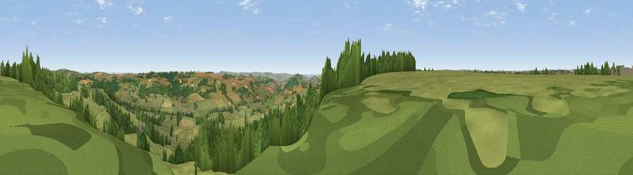

Viewpoint near Yarcombe
#13692 in England · top 28% of its area beats it · near YarcombeThe view, rendered

A 360° render of this exact spot computed from the terrain model, tree cover and land cover — summer colours, afternoon light, calibrated against photographs of famous viewpoints. Real trees, hedges and buildings will differ in detail.
The panorama
Grey silhouette: terrain skyline in each direction (720 bearings, Earth curvature and refraction included). Dashed green: skyline with trees (+15 m) and buildings (+8 m) as obstacles. Blue strip: how far the ground is visible on each bearing.
Where the view opens
Wedge length = distance to the farthest visible ground on that bearing (vegetation-aware). Rings at 10, 25 and 50 km.
What fills the view
73% grassland · 23% woodland · 4% cropland ·
Angular shares of the visible panorama (visual magnitude), not map area. Landscape diversity 0.32 (0–1 Shannon).
Key numbers
More beautiful places nearby
The staircase of upgrades: each row has a higher view potential than everything closer. Driving times are estimates from straight-line distance, calibrated against real road routing — check an actual route before setting out.
| Place | Direction | Drive | Score |
|---|---|---|---|
| Viewpoint near Yarcombe | SSW · 2 km | ~5 min | 63.3 |
| Viewpoint near Membury | SE · 5 km | ~12 min | 65.0 |
| Viewpoint near Combe St Nicholas | ENE · 7 km | ~14 min | 67.9 |
| Viewpoint near Buckland St. Mary | NNE · 8 km | ~16 min | 73.0 |
| Viewpoint near Buckland St. Mary | NNE · 8 km | ~16 min | 77.3 |
| Lambert's Castle Hill | SE · 16 km | ~29 min | 78.7 |
| Viewpoint near Lyme Regis | SE · 19 km | ~32 min | 81.3 |
| Viewpoint near Burstock | ESE · 19 km | ~33 min | 81.8 |
50.87298, -3.08398 · source: screening · position refined by local search. Computed location — check access rights before visiting.